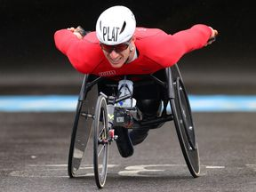

Rijksmuseum gesloten vanwege blokkade Extinction Rebellion

Wilders ontmoet Zalensky: 'Corruptie besproken'

Gijzelaars belangrijker dan controle over corridor, zegt oud-veiligheidschef Israël

Een kunstenaar als Medunjanin heeft Oranje-opponent Bosnië niet meer

Met de Russische invasie in Oekraïne brak ook een cultuuroorlog uit

Honderden evacuaties vanwege bosbrand op berg in Duitsland

IJsvorming mogelijk oorzaak vliegtuigongeluk Brazilië

Loodzware voorlaatste Vuelta-rit met zeven bergen • Roglic gestart in rode trui
collectie Paralympische Spelen 2024
Plat doet op vierde Spelen ook mee aan marathon: 'Was op zoek naar nieuwe prikkel'

Regisseur Pim de la Parra (Blue Movie, Wan Pipel) overleden

Oud-vicepresident Cheney stemt niet op partijgenoot Trump: 'Grote bedreiging'

Kijken
Vijf generaties
Zware orkaan

Vuurhoos

Oplegger tegen bord

Schildpad uit ei

Advertentie via STER.NL